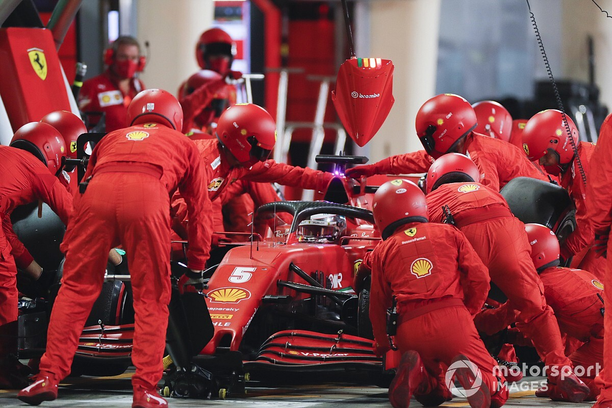
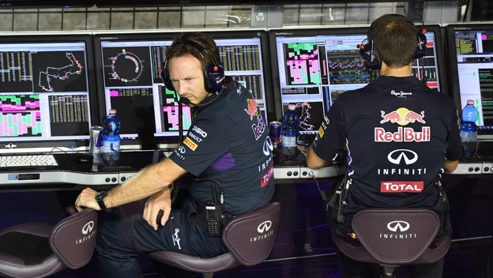
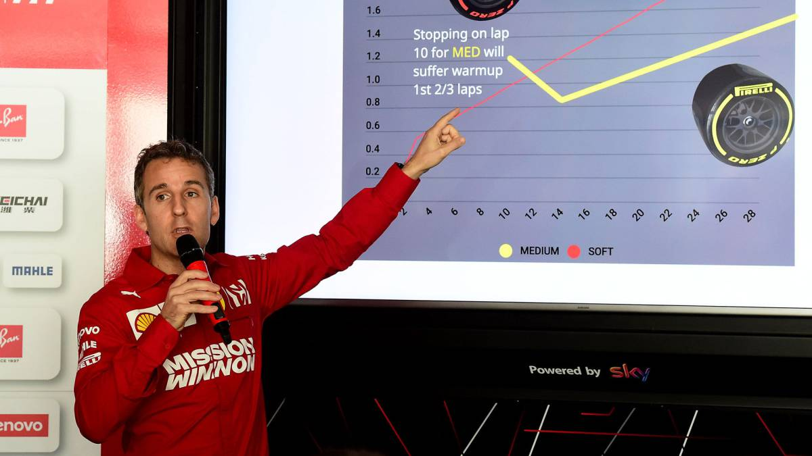

|
|
|---|
|
|
|---|
MecánicosEsta formado por un grupo de alrededor de 20 personas lideradas por un jefe de equipo, si existe algo fundamental en cualquier deporte de automovilismo son los mecánicos. Estos se encargan de probar el motor del auto antes de cada carrera para verificar su desempeño, así como reparar y mantener en óptimas condiciones el monoplaza, tomando en cuenta que el tiempo siempre juega en contra y deben tener todo a punto para cada carrera. Trabajan de acuerdo con la percepción y exigencias de los pilotos, ya sea que por ejemplo el piloto le comente que necesita potencia o pierde agarre. Además, los mecánicos tienen una función ya bastante conocida, reemplazar neumaticos y otros cambios cuando el monoplaza va a los pits, haciéndolo en tiempo increíbles que en su mayoría no deben pasar de 3 segundos.  |
IngenierosEste es el grupo más grande, conformado por alrededor de 15 y 20 ingenieros con distintas especializaciones, según lo que reseña el sitio web de Mercedes AMG. Estos profesionales se dividen en grupo con funciones específicas para cada uno. El principal es el ingeniero de carreras, este es quien se comunica directamente con el piloto, comentándole todo acerca de la pista, como por ejemplo si tiene tráfico cerca o cómo van los tiempos de sus competidores. Además, es quien comunica al resto del equipo todo lo que recibe del piloto, por lo que es el nexo entre ambos. También está el ingeniero de rendimiento, que trabaja en conjunto con el de carrera. En su caso, este se encarga de analizar el desempeño de cada parte del monoplaza, hacer simulaciones y aconsejar al piloto a través del ingeniero de carrera sobre cómo aprovechar al máximo el vehículo y las configuraciones a realizar para lograrlo.  |
EstrategaNo todo es velocidad y manejo, ya que sin una estrategia clara adaptada a cada circuito y rendimiento de todos los competidores, las dificultades de alcanzar un buen puesto son aún mayores. Los estrategas son el “cerebro” detrás de cada decisión, estos toman en cuenta datos de rendimiento obtenidos en las carreras por la clasificación los días anteriores, por ejemplo el desgaste de los cauchos conforme pasan las vueltas o la cantidad de gasolina en los monoplazas. A partir de esto deben generar estrategias legales para sumar puntos, según reseña Soy Motor.  |
|---|
| Hace 15 años la radio comenzó a apoderarse de la cabeza,
las manos y los pies de los pilotos. Esta ayuda externa inició
un diseño de 'robots' en busca de carreras perfectas y una
partida de cartas que se sabía cómo terminaría. Cada vez más,
la agresividad comenzó a medirse, la imaginación se
iba restringiendo, el instinto arrinconando… Sensaciones
por números. Las órdenes desde el muro dictaban a la persona
que estaba en el monoplaza lo que debía hacer. Hoy en día
sigue siendo así pero desde este 20 de marzo, en Australia,
se comprobará qué efectos produce la prohibición por parte
de la FIA de un buen puñado de mensajes por radio, con la
consiguiente disminución de órdenes.
Aqui tenemos un ejemplo de conversación de radio del campeonato más reciente. |
|---|